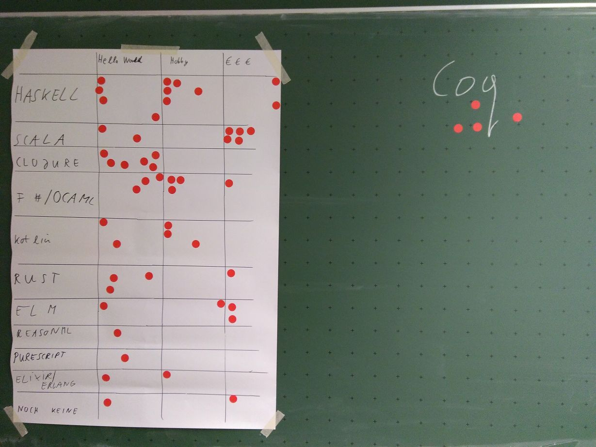

Artikel zu Erlang und Elixir auf informatik-aktuell.de
von Martin Grotz, 2019-11-12
Heute ist ein Artikel von mir auf informatik aktuell erschienen:
Nebenläufigkeit
ganz einfach mit Elixir und Erlang
Darin geht es um Erlang, Elixir, Nebenläufigkeit, das Aktor-Modell, und wie man damit Systeme
strukturieren kann.
Verbesserte Variante des rerun-Skripts
von Martin Grotz, 2019-09-29
Meine ersten Gehversuche mit dem rerun-Befehl waren schon ganz gut. Mittlerweile habe ich mein
Shell-Skript zum Starten davon noch ein bisschen verfeinert.
Während ich mit Elixir entwickle habe ich in einer Shell parallel jetzt eigentlich immer diesen Befehl
laufen:
rerun --dir "lib" --dir test --pattern "**/*.{ex,exs}" --exit --clear --name "Tests" -- mix test
Dadurch ist das Ergebnis in den Notifications besser zu erkennen und man findet beim Reinschauen dann
schneller, was genau das Problem ist.
Für die Typanalyse via Dialyizer nutze ich ebenfalls mittlerweile einen rerun-Befehl mit sehr ähnlichem
Muster:
rerun --dir "lib" --pattern "**/*.ex" --exit --clear --name "Dialyzer" -- mix dialyzer
"rerun" statt "mix test.watch"
von Martin Grotz, 2019-08-24
Ich habe in der hörenswerten Podcast-Folge 63 Designing
Elixir Systems With OTP von Elixir-Mix von einem kleinen Hilfsprogramm gehört, mit
dem man beliebige Befehle ausführen lassen kann, sobald sich eine zu einem angegebenen Muster passende
Datei ändert: "rerun".
Allerdings ist es ein Ruby Gem, d.h. man benötigt Ruby, was ich auf meinem Linux-System erstmal
installieren musste, denn ich mache eigentlich nichts mit Ruby.
Danach habe ich mir für meine jeweilige Elixir-Applikation ein kleines Shell-Skript "mix_test_watch.sh"
geschrieben, damit ich das Datei-Muster nicht jedesmal auf's Neue eintippen muss:
#!/bin/bash
rerun --dir "lib" --pattern "**/*.ex" -- mix test
Anschließend noch ein chmod +x ./mix_test_watch.sh und schon habe ich einen startbaren,
mitlaufenden Test-Watcher.
Alternativ gibt's als Test-Watcher für Elixir auch noch eine spezialisierte Mix-Erweiterung: mix_test_watch. "rerun" kann aber eben nicht nur
als Test-Watcher verwendet werden, sondern z.B. auch, um bei jeder Änderung einen Dialyizer
(Typ-Analyse-Tool für Erlang/Elixir) Durchlauf zu starten, oder aber in der Extremform mit Hilfe einer
anderen Mix-Erweiterung, ex_check, gleich das volle
Paket (Formatter, Linting, Statische Code-Analyse, Tests, Type-Checker). Wobei dann jeder Durchlauf
signifikant Zeit braucht...
Eine Elixir Phoenix App in Apache auf einem vServer hosten
von Martin Grotz, 2019-06-23
ACHTUNG: Der nachfolgende Eintrag ist eher eine Gedächtnisstütze für mich als ein richtig ausgearbeiteter
Blog-Post. Aber weil ich das selten mache, und es doch relativ viele Schritte sind, wollte ich sie
einfach mal festgehalten haben.
Das verbreitetste Release-Tooling für Elixir heißt distillery. Die Installationsanleitung dafür findet
sich hier.
Nach einem kurzen Blick in die nach der Installation mit mix release.init erzeugte Datei
"rel/config.exs" kann ein erstes Probe-Release gebaut werden mit MIX_ENV=prod mix release
Anschließend wird gemäß der Anleitung
das Phoenix Zeugs gebaut.
Dann muss noch gemäß Distillery
mit Phoenix Walkthrough die Konfiguration von Phoenix angepasst werden.
Außerdem brauchen wir einen Ecto Migrations Runner, da wir das ja nicht einfach so machen können. Diese
Anleitung hat mir dabei sehr geholfen.
Bei meinem vServer liegen die Webseiten alle in /var/www/html, also habe ich da einen neuen Unterordner
erstellt. Da wird dann die von distillery erzeugte .tar.gz Datei reingelegt und entpackt. Die Datei
wurde bei mir lokal unter "_build/prod/rel/run_for_your_lives/releases/0.1.0/" abgelegt.
Auf dem remote Server kann das Release dann mit
PORT=4002 ./bin/run_for_your_lives foreground probeweise gestartet werden. Erst, wenn da
alles glatt läuft, kümmere ich mich um die Einbindung in den Apache. ACHTUNG: Für das automatische
Starten später muss der Port in der "config/prod.exs" vor dem Distillery-Build hart kodiert werden!
In meinem konkreten Fall muss ich jetzt erstmal PostgreSQL installieren und konfigurieren (alles auf
Debian buster):
Hilfreich dabei war die Kombination von der PostgreSQL
Anleitung für Debian und der Installationsanleitung
aus dem Debian Wiki.
Und dazu noch das Debian Paket pgadmin4-apache2, damit es direkt in den Webserver eingebunden wurde, so
dass ich nicht mit den Kommandozeilen-Tools rumhantieren muss.
Die SQL-Daten habe ich vorher aus den lokal angelegten Produktiv-DBs via "Backup" in pgAdmin4 exportiert
und einfach als SQL direkt auf dem frisch installierten Server über das dort ebenfalls gerade erst
installierte pgAdmin4 über das Query Tool wieder eingespielt.
Unter sites-available für meinen Apache musste ich dann noch zwei Dateien anlegen: Eine, die von http auf
https weiterleitet, und eine, die die https Anfrage an den Apache dann an die Erlang-App weiterleitet.
Für diese Weiterleitung brauchen wir noch zwei Erweiterungen (mods): mod_proxy_http und
mod_proxy_wstunnel.
Dann die erste Datei: "run_for_your_lives.conf" mit dem Inhalt:
ServerName run.finde-ich-super.de
ServerAdmin martin.grotz@gmx.de
DocumentRoot /var/www/html/run
ErrorLog ${APACHE_LOG_DIR}/error.log
RewriteEngine on
RewriteCond %{SERVER_NAME} =run.finde-ich-super.de
RewriteRule ^ https://%{SERVER_NAME}%{REQUEST_URI} [END,NE,R=permanent]
Und dann noch die mit den Weiterleitungen auf die Erlang-Application und dem eigentlichen Setup:
ServerAdmin martin.grotz@gmx.de
ServerName run.finde-ich-super.de
ErrorLog ${APACHE_LOG_DIR}/run_for_your_lives_error.log
SSLEngine on
ServerName run.finde-ich-super.de
SSLCertificateFile
SSLCertificateKeyFile
Include /etc/letsencrypt/options-ssl-apache.conf
ProxyPass /socket/ ws://localhost:4002/socket/
ProxyPassReverse /socket/ ws://localhost:4002/socket/
ProxyPass / http://localhost:4002/
ProxyPassReverse / http://localhost:4002/
Danach den Symlink setzen, damit in "sites-enabled" auch die passende Konfigurationsdatei aus
"sites-available" eingebunden ist.
Jetzt noch einen Apache-Restart und dann mit "certbot" das Zertifikat um die neue Subdomain erweitern.
Am Schluss
sollten wir unsere Erlang-Applikation noch direkt beim Hochfahren
starten, sonst laufen die Apache-Requests ins Leere.
Dazu muss eine Datei angelegt werden: "/lib/systemd/system/run_for_your_lives_phoenix.service", mit
ungefähr nachfolgendem Inhalt:
[Unit]
Description=Run For Your Lives Phoenix App
After=network.target
[Service]
Type=simple
User=
Group=
Restart=on-failure
RestartSec=5
Environment=LANG=de_DE.UTF-8
WorkingDirectory=/var/www/html/run
ExecStart=/var/www/html/run/bin/run_for_your_lives foreground
RemainAfterExit=no
SyslogIdentifier=run_for_your_lives
[Install]
WantedBy=multi-user.target
Die müssen wir dann noch beim System bekannt machen: "systemctl enable
run_for_your_lives_phoenix.service". Anleitung übrigens aus dem Elixir
Forum
Lambda Lounge Meetup Anfang April & dotnet Day Franken
von Martin Grotz, 2019-04-07
Anfang April war es mal wieder soweit: Die Lambda
Lounge hat sich in Erlangen getroffen, um über Daten und (Typ-)Klassen zu reden.
Der Vortrag war sehr interessant und die Diskussion im Anschluss facettenreich.
Ich freue mich auf die Fortsetzung des Meetups im Mai.
Außerdem hatte ich die Gelegenheit mit meinem Kollegen Patrick
zusammen einen Workshop zum Thema "Funktionale Programmierung in C# und F#" abzuhalten.
Dafür waren wir auf der lokalen Konferenz dotnet
Day Franken.
Die Konferenz war super - sowohl der Workshop-Tag als auch der nachfolgende Konferenztag. Nächstes Jahr
werde ich da auf jeden Fall wieder dabei sein.
Und weil ich mit dem Meetup und vor allem mit der Vorbereitung des Workshops so viel zu tun hatte, gab's
hier auch solange nichts Neues.
Vermutlich wird das auch bis Mai so bleiben, da schon der nächste Vortrag
(und die entsprechende Vorbereitung) ansteht.
Lambda Lounge Meetup Ende Februar
von Martin Grotz, 2019-03-06
Am Montag letzte Woche gab es wieder ein
Treffen der Lambda Lounge - also des Functional Programming Meetups Nürnberg.
Diesmal waren wir in den Räumlichkeiten der redheads Ltd. -
vielen Dank dafür!
Thematisch ging es um Funktoren, Applicatives und Monaden - der Vortrag war sehr aufschlussreich. Auch
die anschließende Diskussion hat mir viele neue Einsichten beschert. Beim gemütlichen Beisammensein
ließen wir den Abend ausklingen.
Ich freue mich schon auf das nächste Treffen - ein Thema steht allerdings noch nicht fest. Updates gibt
es als erstes auf der Meetup-Seite.
Elixir, Phoenix & Elm Vortrag auf der parallel Konferenz
von Martin Grotz, 2019-02-23
Am Mittwoch und Donnerstag war ich auf der parallel Konferenz in Heidelberg und habe dort einen Vortrag
über Elixir, Phoenix und Elm gehalten.
Die Konferenz hat mir insgesamt gut gefallen, auch wenn die Themenschwerpunkte nicht so meine sind. Dazu
sind High Performance Computing und C/C++ einfach zu weit weg von meinem Arbeitsalltag. Trotzdem fand
ich es total interessant, mal in eine "andere Welt" der Software-Probleme und -Problemlösungen
reinschnuppern zu können.
Jetzt geht es vortragsmäßig erstmal in ruhigeres Fahrwasser. Die nächsten Wochen werde ich mich auch
erstmal wieder mehr F# zuwenden, um mich für den Workshop
beim .NET Day Franken vorzubereiten.
Elm-Vortrag auf der c't webdev Konferenz
von Martin Grotz, 2019-02-19
Ich hänge weiterhin hinterher, aber: Vor zwei Wochen war ich als Sprecher auf der
c't webdev Konferenz. Die Konferenz war in einem
architektonisch sehr interessanten Gebäude, dem KOMED in Köln.
Organisation, Technik und Catering waren top, aber dadurch, dass die Konferenz ausverkauft war, ging es
teilweise doch ziemlich eng zu. Keynotes und Speaker waren ebenfalls vom Feinsten.
Die Konferenz soll nächstes Jahr wieder stattfinden (in
einer vergrößerten Location) - meiner Meinung nach eine klare Empfehlung. Wenn ich die Möglichkeit habe,
werde ich auf jeden Fall wieder dabei sein.
Elm-Artikel auf heise-developer
von Martin Grotz, 2019-02-14
Der versprochene zweite Teil des Elixir&Elm-Artikels
auf heise-developer ist online!
Und wie beim vorherigen Artikel gilt natürlich auch hier: Falls es noch Fragen oder Anmerkungen gibt,
einfach melden.
Event-Seite & Elixir-Artikel auf heise-developer
von Martin Grotz, 2019-02-07
Aktuell hänge ich ein bisschen hinterher mit meinem Blog im Gegensatz zu den sonstigen Events.
Deshalb gibt es jetzt der Übersichtlichkeit halber eine neue Unterseite: Events&Termine.
Dort liste ich die Termine meiner Vorträge auf und auch, wenn ich mal irgendwo einen Artikel
veröffentlicht habe.
Genau so eine Veröffentlichung gab es auch letzten Freitag, und zwar einen Artikel
zu Elixir und Phoenix auf heise-developer. Falls es zu dem Artikel noch Fragen oder Anmerkungen
gibt - immer her damit!
In den nächsten Tagen wird es auch den zweiten Teil dort zu lesen geben, in dem zum Elixir-Backend ein
Elm-Frontend gebaut wird.
Die Lambda Lounge ist eröffnet
von Martin Grotz, 2019-01-31
Vorgestern war das erste Treffen der Lambda Lounge. Mir hat es eine Menge Spaß gemacht,
was sicher auch an der enormen Breite von Hintergründen und FP-Erfahrung lag, die am Start war: Von
Entwicklern ganz ohne FP-Erfahrung bis zu ausgewiesenen Profis, die sogar Vorlesungen zum Thema halten,
war alles dabei.
Gleich zu Beginn gab es eine Selbsteinschätzung der Teilnehmer auf einer Klebetafel (die Idee zu den
Klebepunkten habe ich von Marco Emrich übernommen). Mal
sehen, wie das in 12 Monaten dann aussieht:

Danach haben wir noch überlegt, wie wir in Zukunft weitermachen wollen: Mit einer Mischung aus
theoretischen Impulsvorträgen und praktischer Anwendung des jeweils Gelernten werden wir in den
nächsten Monaten an den Start gehen.
Zum Abschluss habe ich noch eine kleine Live-Coding-Session mit Elm gemacht.
Ich freue mich auf jeden Fall schon auf das nächste Treffen der Lambda Lounge, welches aller
Wahrscheinlichkeit Mitte/Ende Februar stattfinden wird. Vielen Dank an dieser Stelle auch nochmal an Merlin Göttlinger für die Organisation des Raumes!
Quellcode zum OOP Vortrag
von Martin Grotz, 2019-01-30
Der Vortrag
auf der OOP 2019 ist vorbei. Mir hat es Spaß gemacht und ich glaube, die Zuhörer fanden es
auch ganz okay.
Den Quellcode zum Vortrag gibt es auf
meinem github-Account. Bei Fragen, Anmerkungen oder Verbesserungsvorschlägen schreibt mir
einfach eine Nachricht.
Vortrag auf der OOP Konferenz
von Martin Grotz, 2019-01-21
Nachdem es bedingt durch einen Server-Umzug und die Feiertage hier länger nichts Neues gab, gibt es nun
doch mal wieder was:
Ich war nicht gänzlich untätig, sondern habe meine Elm-Kenntnisse mit einer passenden
Server-Programmiersprache kombiniert: Elixir.
Daraus ist ein Vortrag entstanden, den ich übermorgen auf der OOP 2019 halten werde. Die Details finden
sich im
Konferenzprogramm.
Ich freu mich schon riesig drauf, und danach geht's hier auch wieder mit neuen echten Inhalten in
Sachen Elm (und Elixir) weiter!